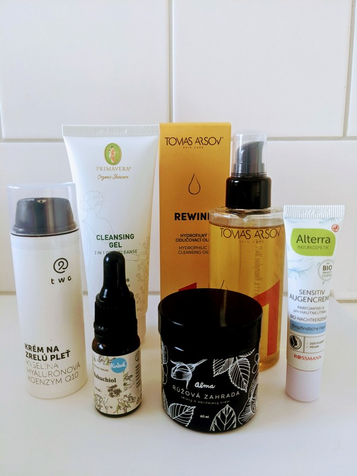
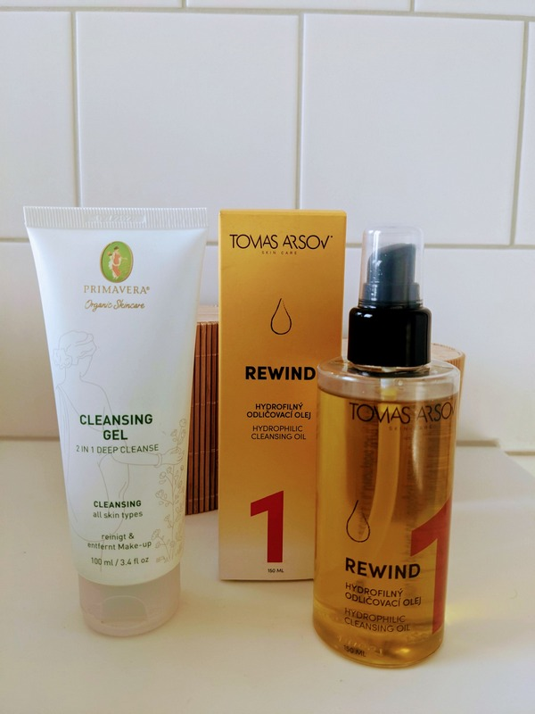
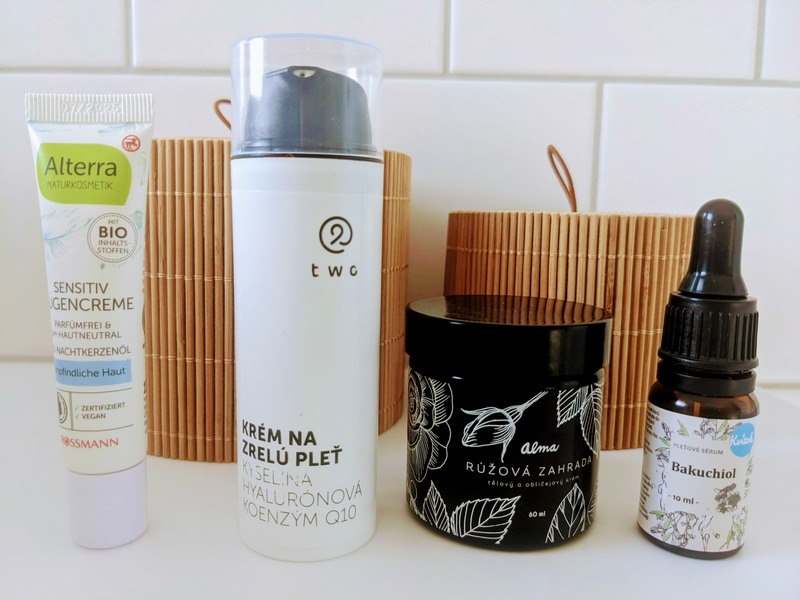

Rok se s rokem sešel a je tu zase má oblíbená akce - Otcovský víkend - která pro mne znamená jediné: celé dva dny času jen pro mne O:-). A tak určitě přijde řada na spoustu věcí, na které se mi v pěně všedních dní času většinou nedostává. Skouknutí filmu, jóga, blog a zcela jistě i nějaké to kosmetické rozmazlování. Při té příležitosti mne napadlo, podělit se zase po dlouhé době o své kosmetické oblíbence, neb v mém věku už člověku pleť zadarmo nic nedaruje 8-)

Hloubkově čistící gel 2v1, Primavera
Už leta jsem věrná přírodní kosmetice a na stavu pleti je to rozhodně znát. Ranní a večerní čištění pleti zaujímá v mé kosmetické rutině neotřesitelné místo, byť čistící přípravky čas od času střídám. Tento čistící gel od německé značky Primavera je určený i k odstraňování make-upu, ale já s ním odlíčenou pleť už většinou jen dočišťuju. Gel má příjemnou bylinkovou vůni a po ránu hezky osvěží. Oproti čistícím olejům třeba od Kvítku, které také ráda používám, tento gel malinko vysušuje, ale zase je s ním čištění pleti krapet pohodlnější a rychlejší.
Hydrofilní odličovací olej Rewind, Tomas Arsov
Odličování olejem je fajn hack, který šetří čas, nepotřebujete k tomu vatové tamponky a jako bonus vůbec nevysušuje pleť. Olej je na obličeji moc příjemný, má neutrální vůni, snadno ho opláchnete vodou a je vhodný pro všechny typy pleti.

Krém na zralou pleť s kyselinou hyaluronovou a koenzymem Q10, Two cosmetics
Tato slovenská kosmetická značka je moje srdcovka už delší dobu, vyzkoušela jsem od nich spoustu výrobků a všechny jsou naprosto top. Nejinak je tomu i v případě tohoto pleťového krému, který používám na den a jako podklad pod make-up. Přestože se jedná o krém určený na zralou pleť (40+), rozhodně se nemusíte bát přehnané mastnoty - konzistencí je hutný tak akorát. Pleť hezky vypne a vyživí. Pozitivní je i praktické pumpičkové balení, které bohužel u pleťových krémů stále není samozřejmostí. Jediné, z čeho radostí neskáču do stropu, je trochu zvláštní vůně tohoto krému, ale není zase tak výrazná, aby mě to rušilo.
Pleťové sérum Bakuchiol, Kvítok
Sérum je v moji kosmetické rutině poměrně novinkou, ale je to péče navíc, která se již ne úplně mladé pleti opravdu vyplatí. Používám ho jako podklad pod krémy, které nejsou na bázi vody a tudíž by samy o sobě mohly pokožku vysušovat a ze stejného důvodu se skvěle hodí i pod pleťové oleje. Toto sérum od mé oblíbené slovenské značky Kvítok je v recenzích poměrně vychvalované a i já musím uznat, že je moc fajn. Bakuchiol je rostlinnou náhradou retinolu, který citlivé pleti nemusí vždy vyhovovat, zároveň si však v sobě ponechává všechny retinolu přisuzované výhody, jako je stimulace tvorby kolagenu a elastinu, zpevnění kontur pokožky na obličeji, zjemnění vrásek či zesvětlení pigmentových skvrn. Sérum je tekuté a lehké a má malinko nasládlou, ale v podstatě téměř nepostřehnutelnou vůni.
Oční krém Sensitiv, Alterra
Aktuálně ráda používám tento low-cost oční krém z Rossmanna, který je překvapivě moc fajn, bez parfemace, takže oční okolí nijak nedráždí. Je spíš tekutější konzistence, ale pokožce kolem očí dodá i tak potřebnou výživu. Zázraky ovšem samozřejmě neumí - to dokáže pouze kvalitní spánek :-D
Tělový a obličejový krém Růžová zahrada, Alma
Můj aktuální noční krém vhodný na suchou, citlivou a zralou pleť je naprostá srdcovka. Už ta jejich nová inovovaná balení jsou prostě překrásná a potěší oko každého estéta. Krém samotný má jemnou našlehanou pěnovou konzistenci a je VELMI mastný, ale na noc mi to samozřejmě nevadí a naopak jsem nadšená, jak ráno vždy pokožka působí vyživeně. A tu božskou růžovou vůni si rozhodně zamilujete!
